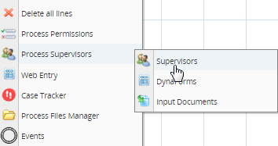
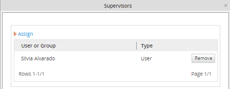
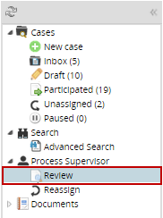
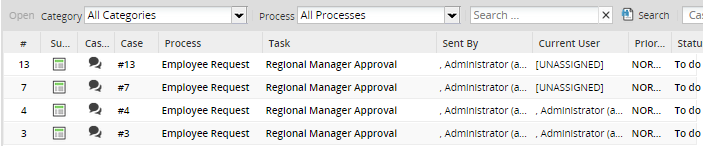
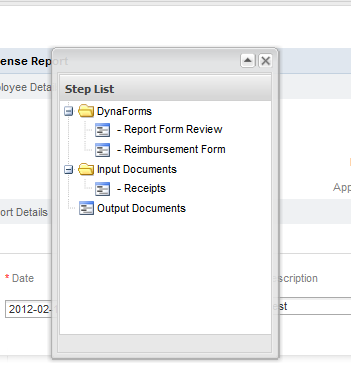
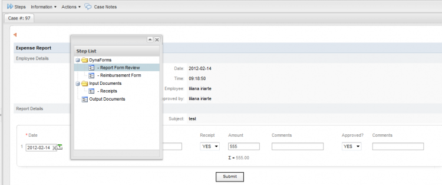
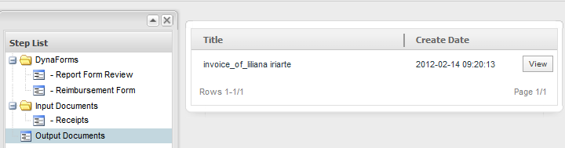
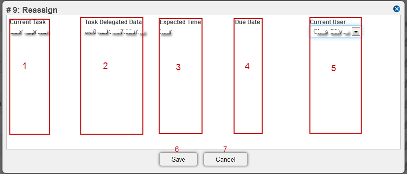
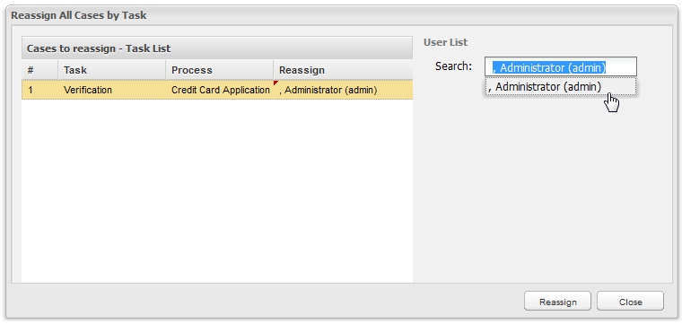
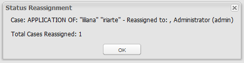

Overview
Process Supervisors are users who have special privileges to oversee and review the cases for a particular process. Often the manager or department head in an organization will be assigned as a Process Supervisor. Unlike Process Permissions which give read -only access to cases, a Process Supervisor can be given both read and write access to cases.
Process supervisors are be able to:
- See all the cases in a process even if they aren't assigned to any tasks in the case or haven’t participated in the case.
- If users have been assigned as Process Supervisors to DynaForms, they can edit the data in those DynaForms after they have been submitted.
- Likewise, if they have been assigned as process supervisor to Input Documents, they can delete and resubmit those Input Documents.
- Upload new Input Documents when a case is running, so user/users, who have running the case, can see new uploaded documents. Available from version 2.5.
- Process Supervisors can't modify information of a case completed, so cases won't list on the review option unless they are searched by Case ID, and if dynaforms, Output and Input Documents needs to be visible to the supervisor, give process permissions.
- Unpause a case from the Pause Case option on the Case List. Available from version 2.5.
Defining a Process Supervisor
Only the users with a PM_SUPERVISOR permission in their role can be assigned as process supervisors. This permission is included by default in the PROCESSMAKER_ADMIN and PROCESSMAKER_MANAGER roles, but not in the PROCESSMAKER_OPERATOR role.
It is generally not a good idea to give managers and department heads the full powers of a PROCESSMAKER_ADMIN, because they might accidentally modify the definition of processes. Only people who know what they are doing should be given those powers. Therefore, it is recommended to give process supervisors the PROCESSMAKER_MANAGER role so users can additionally do things like see all cases, reassign cases, delete and edit users, etc.
If the process supervisor should only be able to edit case data, then create a new role for process supervisors with the PM_LOGIN, PM_CASES, PM_SUPERVISOR, PM_REASSIGNCASES permissions. If the process supervisor should be able to see all the cases from all the other processes as well, consider adding PM_ALLCASES and PM_DASHBOARD to the new role as well. After creating the new supervisor role, then assign that role to the user(s) who will be the processes supervisor(s). Go to USERS > USERS LIST and click the View link for the user. Then in the form displaying information about the user, click 'Edit', go to the Role dropdown box and select the new supervisor role for the user.
Then open the process which will be assigned a process supervisor. Right click on a blank area in the process map and select Process Supervisors > Supervisors from the menu.
Adding a new supervisor
Right click on the Process Map and select the option Process Supervisor , the user will have access to the tree types of process that will display as bellow:

Supervisors
The user assigned as process supervisor, will have the permission to see all the open cases for the process, besides input and output document for the case. A list of process supervisors will display to him/her. To add a new supervisor, click on Assign link. Select a user who has a PM_SUPERVISOR permission inside his role, or create a new role named PM_SUPERVISOR; then click on the Assign icon. A number of needed supervisors can be added to this process.

Assigning a Group as Supervisor
Available Version: From 2.5
Groups created, can be assigned as Process Supervisors. This will allow users not loose the Process Supervisor settings when a process is exported. However, when a process is exported, users assigned into supervisor's group will not be exported.
Assigning Supervisor, on the list Users and Groups will be listed

DynaForms
Select this option if the user needs access to see or edit a DynaForm made during the process, then a list of DynaForms with the Process Supervisors with access will be shown below. Now the process supervisor should be able to edit the data on the sent Dynaform.

If you do not want to display all the Dynaform's information, and instead, you´d like to show data from different forms, you can create a form containing all that information and assign it to the Process Supervisor who has access to it.
Input Documents
All Input documents uploaded during the case will be listed.
The supervisor to have access to:
1. Attach: A new document can be uploaded, it will be available for the user who is running the case, and who has process permissions to have access to the uploaded documents.
2. Download: The document can be downloaded.
3. Delete: The document can be deleted. If the document is deleted, it won't be available for the user who is running the case, and who has process permissions to have access to the uploaded documents

Note: Remember that the case must not be finished in order to have access the above options.
Reviewing DynaForms, Input and Output Documents as a Supervisor User
After assigning a user as Process Supervisor , he must go to HOME > Process Supervisor > Review , in that way he will be able to see all the open cases of the process. (To see the finished and canceled cases, add the PM_ALLCASES permission to the supervisor role.)

In each case, the process has the Open, Summary or Case Notes options.

Cases will be listed on review list only if they are with TO_DO status otherwise cases must be found by entering its name and only a summary of the case will display to see dynaforms of the case Process Permissions must be assigned .
Opening a Case
It will open a case and display the "Steps" window for a case. In that window, the supervisor can see any Input and Output Document for the case. Only the supervisor assigned as Process Supervisor will be able to see and edit those DynaForms . Meanwhile the supervisor can “see” all the Input Documents, he only will be able to “Delete” or “download” Output Documents if he is being assigned as Process Supervisor.
Note: From version 2.0.44 the step list window won't appear automatically, click on Steps to open the respective list.

- Selecting a DynaForm: On the right side of the screen the DynaForm will be displayed selecting the lists of steps as shown below:

As you can see the DynaForm´s information can be modify but the supervisor won't be able to continue the case.
Modifications on DynaForms will be reflected on the Dynaforms Change Log
Note: It's important to mention that executing triggers when the supervisor is reviewing the dynaforms is not possible because what is shown on the supervisor dynaforms are not steps, they are previews of the dynaforms and the functionality is only save case variables.
- Selecting an Output Document : On the right side of the screen the Input Documents generated during the process will display as shown below.

When clicking on see you will access to the Output Document to be download.
Summary
Summary: It will show the summary of the open case.
Case Notes
Case Notes: It will show the case notes, written or added during the process .
Reassigning Cases
As a supervisor user is possible to reassign cases, go to HOME > Process Supervisor > Reassign, in order to reassign cases. A list of cases pf any user assigned in tasks will display, click on one of the list and then click on the Reassign option on the upper menu:

A new window will display where it is possible to reassign all cases by a task, on the right side the User List will display where the list of users available for that process will be listed, select one of the list and click on Reassign:

The window Status Reassignment will display showing the details of the cases reassigned. Moreover, it is possible to reassign the case to the same user who has the case and who has Supervisor permissions. This is available from version 2.5.2.
On this suggest box for reassigning user, Ad-hoc users are not listed because there isn't a support for this kind of re assignment yet.

Note: More than one case can be reassigned.